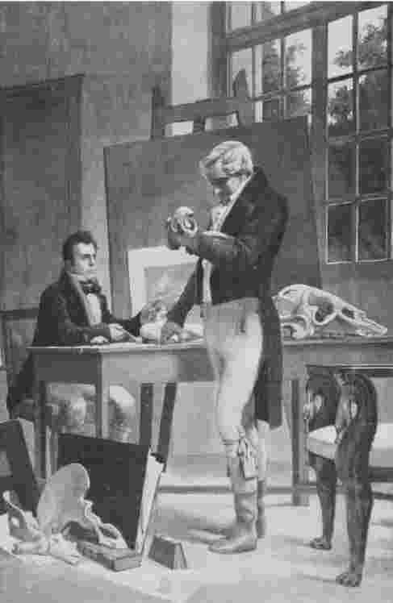

福柯常被视为哲学家、社会理论家或者文化批评家，但事实上，从《疯癫史》到《性经验史》，福柯写的几乎都是史学作品；当法兰西学院想为他的席位加个头衔时，福柯选择的是“思想体系史教授”。然而，福柯又认为他的史学作品有别于标准的观念史作品，他先是把自己的作品称为思想“考古学”，而后又称为“系谱学”。
在现代派文学中，语言往往被视做独立存在的思想源泉，而非供人驱使的表达思想的工具；福柯的思想考古学概念同现代派文学对语言的这种理解密切相关。然而，福柯的计划不是通过越界或者隐退行为开辟一个由语言去“言说”的空间，而是把以下事实作为出发点：在一个既定领域内的任何既定时期，都存在对人们思维方式的实质性限制。当然，像语法和逻辑这样的形式限制一直都有，它们将某些表达归为胡言乱语（无意义）或不合逻辑（自相矛盾）。但这位思想的考古学家感兴趣的是另外一套限制规则，比如，正是这样的一些规则使人们在数百年间都觉得“天体可以不按圆形轨迹运行或者由尘世物质构成”这样的想法是“不可思议的”。在我们看来，这样的限制愚蠢可笑：他们为什么无法看出至少存在这样的可能性呢？然而，福柯要说明的是，任何一种思维都存在这样的潜在规则（或许规则的遵循者们自己都无法阐述），它们实质上限制了我们思考的范围。如果能够揭示这些规则，我们就会明白这些看似随意的限制在由此类规则界定的体系中畅行无阻。此外，福柯也暗示，我们自己的思维也受制于此类规则，因此，如果能从未来的角度审视今天，这种限制也会像我们今天眼中的过去那样随意。
福柯认为，在既定的历史时期进行思考的实际上是每一个个体；而分析那些不受个体控制的因素，正是理解制约人们思考的约束体系之关键所在。从这个意义上说，“观念史”——意指科学家、哲学家等的所思所想——远不及那些构成他们思考的历史语境的潜在结构重要。例如，相较于作为个人的休谟或者达尔文，我们更感兴趣的是什么使休谟或达尔文的出现成为可能。这就是福柯著名的“主体的边缘化”主张的根源。福柯并不是在否定个体意识的现实性或个体意识在伦理意义上的极端重要性，他只是认为个体活动于一个概念环境之中，这个环境以一种不为他们所知的方式决定、限制着他们。
除了用考古学描述福柯这项新的研究课题之外，另外两个比喻也看似恰当，即地质学和心理分析。萨特首先提出了这一地质学的类比概念，而福柯本人在谈到用他所提出的历史研究方法揭示出来的“沉积层”（《知识考古学》，第3页）时则采纳了这一概念。然而，这一比喻存在着误导读者的危险，会让人认为我们可以像地质学家那样置身其中并“亲眼看到”思想的内在结构，而事实上，我们所能接触到的只是一些表层现象（语言的某种既定用法），我们需要根据这些表层现象去推测潜藏于下的结构。另外一个比喻，即心理分析的比喻，很受福柯推崇，这个比喻将潜藏于下的结构呈现为潜意识的一部分，呈现为只有通过分析我们已知的语言事件才能加以揭示。然而，和心理分析不同的是，福柯的历史不具备阐释学性质，即它不会为了还原其深层含义而对我们所听到的、所读到的作出阐释 。它涉及文本，但不是将其作为文献记录，而是像考古学家那样把它们当做重要遗迹（《知识考古学》，第7页）。换句话说，知识考古学家不再追问笛卡尔的《第一哲学沉思集》是什么意思（即笛卡尔试图表达的是什么观点）；他们只是把笛卡尔——及其同时代作家，无论是否出名——的作品用做线索，据此来重构这些作家思考和写作时置身其中的系统的总体结构。仍用考古学的类比来讲，福柯的兴趣不在于某一特定的研究对象（文本），而在于这一对象的发掘场所的整体结构。
和现代派先锋艺术家们追求没有作者的写作相类似，福柯的考古学试图架构一种没有个人主体的历史。和人们通常会由此得出的结论相反的是，这并不意味着把主体完全排除在历史之外；归根到底，福柯所谈论的是我们的 历史。但考古学所强调的是，上演我们历史的舞台——以及大部分的演出脚本——独立于我们的思想和行为。这是它和常规历史的区别之处，后者通常讲述个人主体在时间中的变迁。观念史就是一个典型例子。标准的观念史通常讲述哲学家、科学家和其他思想家们如何提出自己的重要观念和理论、又如何将这些传授给他们的继承者。福柯并不排斥这种“主体中心”的描述，但他同时指出，这种描述易于出现特性失真。它们将历史看做故事，看做叙事，既然故事可以从一个人或多个人经历的角度来讲述，那么这个故事就会体现出意识的连续性和目标指向性。于是，历史就成为小说，其情节由人类的利害考虑统领，最终指向一个对人类而言有意义的结局。表面看来，这样的叙事令人信服；但同时，它忽视了历史表面的延续性和目的性在多大程度上要归因于一种错误的假设，即人类历史从根本上是由实践这种历史的意念的经验和计划所驱动的。考古学恰恰引入了意念之外的因素，这些因素很可能会证实我们自认为存在于我们生活中的延续性和趋向性是虚假的。
为了进一步解释福柯的观点，可以考虑一下对历史的“辉格式”阐释。这一阐释把历史讲述成朝向光辉现世的逐渐推进过程，曾招致很多骂名。（“辉格式”意指辉格党人的思想体系，该词充斥于麦考利爵士的《英格兰史》中。）在20世纪的历史学家看来，把过去看成是以今天的我们为显明目标的一种持续前进是天真的，但他们提供的典型替代即是以过去本身的概念和关注讲述过去的故事，一种“那时他们如何认为”的叙事。但是令人疑惑的是，举例来说，为什么伊丽莎白时代人对自己历史的视角就比麦考利爵士的视角更应该得到优先考虑？为什么这两种视角中的任何一种都优先于生物学、气象学或是地理学因素，纵然这些因素比伊丽莎白时代人所能想到的任何事物都更能影响他们的历史？事实上，这种思路对历史编纂学领域的法国年鉴学派（因主办的杂志而得名）非常有用，而福柯在《知识考古学》一书开篇即以肯定的口吻引述了该方法，并回顾了自己想要把年鉴派的方法用于思想史研究的努力。
或许，我们会提出异议，认为这样的推论不合逻辑，因为伊丽莎白时代人的所思所想显然决定着他们有怎样的思想史。但是福柯质疑的正是这种所谓的自明之理。这位考古学家提出，“伊丽莎白时代人的所思所想”——通常意义上“他们意识到的自己的想法”——大部分可能是他们意识之外的那些因素的远期后果。另一方面，福柯也不像马克思主义或者其他形式的历史唯物主义那样，试图通过外在的社会或者经济力量来解释思想观念。他的构想是提供一种对人类思想的内在描述，同时对这种思想中的有意识内容不赋予优先地位——这种思想没有给予思考者任何优先角色，正如作品没有优先考虑作家角色。和现代派文学情况相同，语言作为独立于使用者的一种结构是完成此项研究的关键。这就暗示了另一种类比，它有助于我们理解福柯的研究——与乔姆斯基的语言学相似，它试图揭示人类语言的“深层结构”。值得注意的是，比起语言的形式（无论是句法的还是语义的）结构，福柯更为关注的是那些限制人们言论和思想的实际内容的结构。
“限制”思想这一概念向我们暗示了关于思想考古学的一个决定性学科类比，即试图确定我们的观念和经验的“可能性条件”的尝试，这也是自康德以来大部分哲学研究的共同特点。康德认为这些条件是“先验的”，因为他们既非经验的（由具有偶然性的人类历史所决定）也非超验的（起因于加在我们身上的必要的外在约束）。鉴于我们作为有限认知者的身份，我们要想能够对世界有一定的认识经验，上述约束条件就是必要的。根据康德的观点，使经验成为可能的先验条件有一些要求，例如，我们体验的对象必须存在于一定的时间和空间，它们必须是遵守因果律的物质。由于这些条件先于经验而存在，康德称它们为“先天的”（以区别于从我们的经验总结出的“后天的”真理）。
福柯曾用康德式语言描绘自己的考古研究，声称它旨在寻找某一特定历史时期思想的“可能性条件”（《事物的秩序》，第xxii页）。不同的是，对康德而言，这样的条件是普适性的，是所有可能的经验的必要制约条件；而福柯认为这些条件要视特定的历史情境而定，应随着时间的迁移和知识领域的不同作相应的变化。不变物种理论是18世纪生命知识的必要条件，但对于20世纪来说则不然。因此，福柯指出，这样的考古学仅仅把人们引向相对而言的“历史性先验知识”，而非康德宣称发现的永恒、绝对的先验真理。这里存在着深层次的差异，因为康德所声称的普遍必然性要求他的超验研究使用超越自然科学、历史等经验学科的研究方法；这些声称要求一种特殊的哲学性先验方法来进行先验思辩。福柯可以借用康德的术语，但他的研究计划并不指向任何超出历史编纂学的经验研究范畴的真理。
福柯的考古学对科学史上很多已被接受的观点提出了挑战。例如，众所周知，拉马克是达尔文进化论的先驱，居维叶则坚决反对物种经过长期渐变而最终出现这一观念。在《事物的秩序》一书中，福柯承认拉马克论及了物种（通过继承后天获得的特征）历时而变，而居维叶的理论认定物种恒定不变。但是福柯声称，这些冲突的观点掩盖了一个更加根本性的分歧。拉马克的研究是在和“古典时代”（泛指1650年到1800年间的欧洲，尤其是法国）相联系的考古学一般框架（用福柯的术语来讲，一种“知识型”）中进行的。按照福柯的分析，古典时代的知识型不把时间作为自然界的一个重要维度。所有可能出现的生物种类都是先决的，完全不依赖于历史性的发展演变，可以借助不随时间变化的种属表完全呈现出来。各个种、属在时间中的逐渐实现不需要同时实现所有的可能特征，但是它们必须严格按照种属表所规定的亲缘关系的恒定顺序出现。拉马克假定了这样一个依次实现的过程，但他不知道（也不可能知道）不同时期出现的物种之间的差异背后也有一定的历史原因。

图6 乔治·居维叶研究动物化石，沙特朗所绘油画真迹翻拍
居维叶确曾断言所有物种从一开始就存在，并非由历史原因导致。但是，和拉马克不同的是，居维叶的研究框架是现代知识型（大约1800年后开始占主导地位），这一知识型与古典时代的知识型对比鲜明，认为生命形式在本质上是历史实体，由此通过历史的、进化的原因逐步形成就成为可能。在这个意义上，居维叶和达尔文的冲突只存在于“事实上发生了什么”这一表面层次。拉马克则不同，尽管他支持类似于达尔文的一些字面论断，但在关于物种的含义这个更深的层次上和达尔文观点相左。从18世纪中期到19世纪中期，欧洲关于生物的概念发生了一次根本性的断裂：拉马克处于这一分歧的一边，居维叶和达尔文位于另一边。常规的观念史之所以忽视了这个关键点，是因为它们只注重思想家个人的理论，忽略了潜藏于下的考古学框架，这些框架正是理解这些理论的终极意义的必要条件。
在《知识考古学》一书中，福柯详尽陈述了如何把考古学作为一种史料编纂方法，但事实上，这种方法在福柯于20世纪60年代所写的三本历史著作——《疯癫史》、《临床医学的诞生》和《事物的秩序》中已经逐步发展成形。既然这一方法的形成是为了应对具体的历史问题，与其根据它作为一种普通认知理论的说服力，倒不如根据它能产生的历史结果来对它的价值进行评估。学术界已有不少历史学家对其进行了严苛的评价。安德鲁·斯卡尔就赞同他自己所恰当认为的“大多数英美学界专家的判定，即（《疯癫史》）是一部发人深醒、光彩夺目的散文诗，但同时也是一部理论基础薄弱、充斥着事实性和阐述性错误的作品”。
在此，我们通过一个例子来说明这些学者为何不能接受福柯式的考古学研究。在《疯癫史》中，福柯有一个重要论断，即在17世纪中期，禁闭疯癫病人的做法（把疯癫者关在特殊的拘留室，与大众隔离）具有特别的重要性，它与古典时代对待疯癫的根本态度有本质上的联系，后者认为疯癫是对理性的弃绝，因此疯癫者在理性社会中不应有容身之地。然而，直至2002年去世之前一直是英语世界研究疯癫之翘楚的历史学家罗伊·波特提出，对英国某些地区处理疯癫病人的研究表明，“精神错乱者的典型状况仍是放任自流，居民们都认为这是疯子的家人应负责处理的事”。即便有些疯癫者被禁闭起来，也只是很少的一部分：甚至只有五千人，截至19世纪早期也不会超过一万人。据此，波特认为，禁闭更多是19世纪的做法；在整个古典时代，“拒斥疯癫者这种做法的增多是缓慢的、局部的、不成规模的”（“福柯的大禁闭”，第48页）。
然而，值得注意的是，波特对福柯的批评是基于一种个人的信念和行为，而在福柯的考古学中，这种个人的信念和行为并非关注的重点。对于不同国家人们的思想或行为，福柯并不进行经验性的归纳概括，他所做的是努力建构一种具有普遍性的思维模式（知识型），这一模式潜藏于各种不同的信念和行为之下。诚然，一种知识型必须在其所约束的思考主体的实际信念和行为中得到反映，但在普遍的思考结构和具体的信念和行为之间不存在简单的对应关系。我的心理医生说我在潜意识里厌恶女性，可我每周都去探访我的母亲，也从没有忘记和妻子的结婚纪念日，但我并不能因此驳倒心理医生的结论：或许，在我的一些日常行为范式中的确表现出对女性的深层次的敌意。
与此类似，禁闭——无论在不同地区、不同时期推行的广度如何——可能代表了古典时代对于疯癫的独特看法。这并不是说福柯的论点不可证伪，而是说，论点要作为一种普遍阐释性假设来检验，即验证它是否能对大量的数据进行总体分析并得出有意义的结论，是否能揭示新的研究方向，而不应该把它作为一种经验性的概括——比如“天下乌鸦一般黑”——来进行评判，这样的概括一个反例就能驳倒。
前面一章里讨论了福柯作品的政治倾向性，这里，我们或许终究要问：福柯的考古学和他的政治倾向是否相关。表面上看，福柯的考古学强调的是抽象的语言结构，这和政治权力的现实性似乎风马牛不相及，并且，政治权力只是在福柯20世纪70年代的作品中，在他提出系谱学研究方法的时候，才是一个明确的主题。但是，考古学也并非不具备政治（和伦理）潜能。这一潜能具体表现为：考古学向我们展现了各种不同的思维模式，这就促使我们质疑自身思维模式的必然性。有一点至关重要，即福柯的考古学分析从未针对与我们的文化有根本性不同的异质文化展开。在《事物的秩序》一书中，福柯在前言中引述了博尔赫斯著名的动物归类法（“属帝王专用”，“散发香味的”，……“流浪狗”，“目前分类已包括的”，……“为数众多的”，……“远看如蝇”等类别），该归类法源自某神秘的“中国百科全书”。看到考古学所呈现的完全不同的基本思维方式时，我们的反应大可用这段引文来表示：“根本不可能那样 去思考。”（《事物的秩序》，第xv页）然而，福柯的考古学确实展现了这些不可能性，只是不是来源于像中国这样远不可及的国度，而是源自距我们今天年代不算久远的西方文化历史：16世纪到18世纪的欧洲。
由此，考古学向我们证明，那些看似“不可能”的思维模式对与我们相距不远的知识分子前辈来说完全是有可能的。例如，我们认为，对待疯癫唯一理性的方式就是把它视做“精神疾病”，但福柯的考古学告诉我们，在略早于二百年前，包括笛卡尔和莱布尼茨在内的很多人——现代科学体系的“奠基者”们——都对疯癫持完全不同的看法。这种展示蕴含着颠覆性，暗示潜藏在我们观念和看法之下的知识型未必像我们所认为的那样具有必然性。当这些观念涉及一些具有伦理性、政治性的社会实践的基础（如我们对疯子的处理方式，我们的医疗体系，以及现代社会科学——也就是福柯考古学研究的三个学科领域）时，考古学显然不只是关于抽象语言学现象的中立性描述。